Lab 7
API Developer Portal
Publishing APIs to Developer Portal
- Duration: 20 mins
- Audience: API Owners, Product Managers, Developers, Architects

Overview
The focal point of your developers’ experience is the API developer portal, and the level of effort you put into it will determine the level of decreased support costs and increased developer engagement.
Why Red Hat?
3scale provides a built-in, state-of-the-art CMS portal, making it very easy to create your own branded hub with a custom domain to manage developer interactions and increase API adoption.
You can customize the look and feel of the entire Developer Portal to match your own branding. You have complete control over every element of the portal, so you can make it as easy as possible for developers to learn how to use your API.
Lab Instructions
Step 1: Customizing Developer Portal
Open a browser window and navigate to the 3scale admin app. Please check with your instructor.
Log into 3scale using your designated user and password. Click on Sign In.

Click on the Developer Portal tab to access the developer portal settings.

On the right menu select Home Page, and replace the entire content with what's in the example link example

Replace the CHANGE_ME_URL to the PLAN_URL you get from last lab.
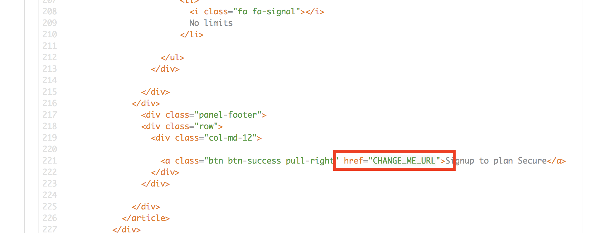Click the Publish button at the bottom of the editor to save the changes and made them available in the site.

Click on the API Tab, select the Integration link under SSO Location API, and click on the Application Plans on the left menu when it shows up.
- And publish your application plan by clicking in on the Publish option on the page.
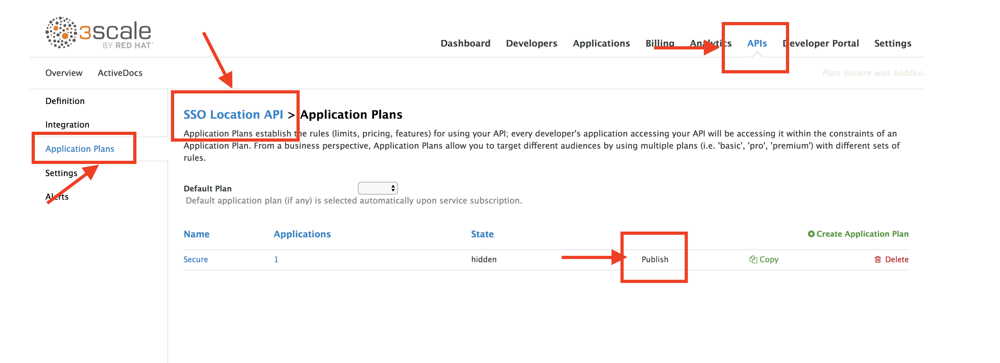- And publish your application plan by clicking in on the Publish option on the page.
Go back to your Developer Portal tab. Click on the Visit Developer Portal to take a look of how your developer portal looks like.
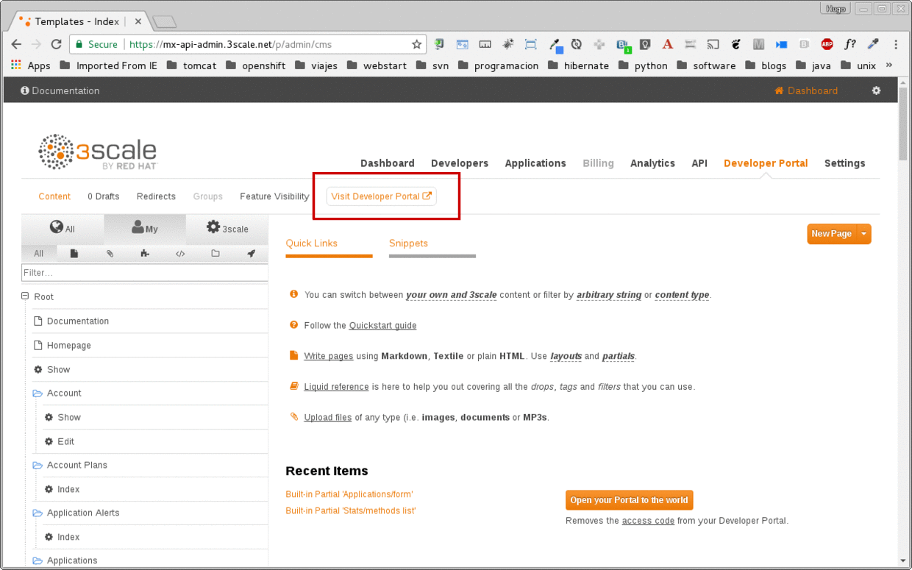
Step 2: Register New Accounts Using Developer Portal
Take the place of one of your developers and signup for the Secure plan.
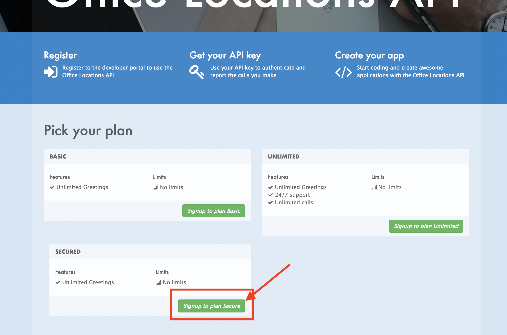Fill in your information and an email to register as a developer. Click on the Sign up button.
- ORGANIZATION/GROUP NAME: workshop
- USERNAME: developer
- EMAIL: developer@redhat.com
- PASSWORD: developer
- PASSWORD CONFIRMATION: developer
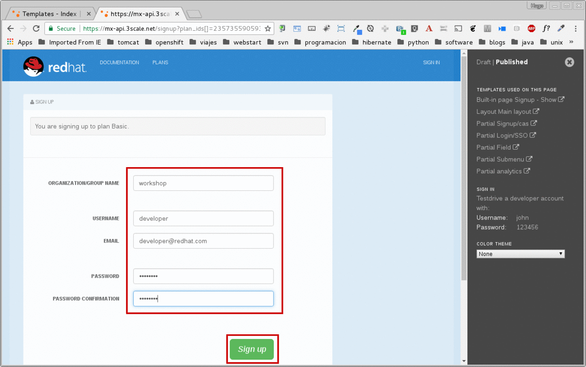The system will try to send a message with an activation link.

Currently the lab environment doesn't have a configured email server, so we won't be able to receive the email.
Go back to your Admin Portal tab and navigate to Developers to activate the new account.

Find your user under the Accounts and click the Activate link.

Your user is now active and can log into the portal.
Now we need to make sure the the application will redirect the user to the correct page after successful login. Go to the Developer tab and click on the user you have create in the previous steps.
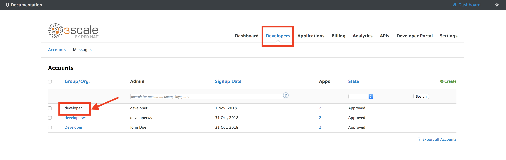Select the application for the
SSO Location APIservice
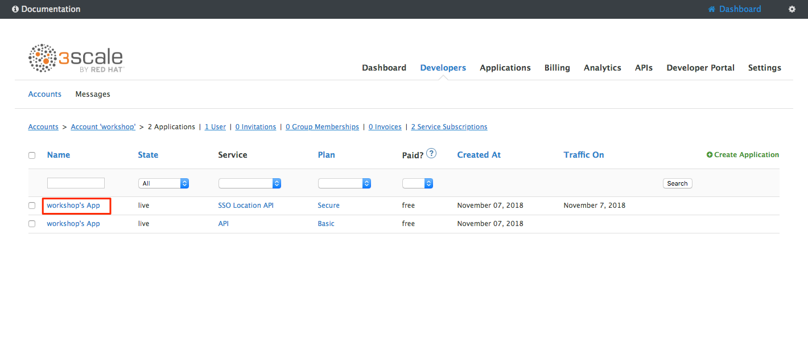Update redirect link to your locations application link. Please update userX and OCP_URL http://www-[userX].apps.[OCP_URL]/*
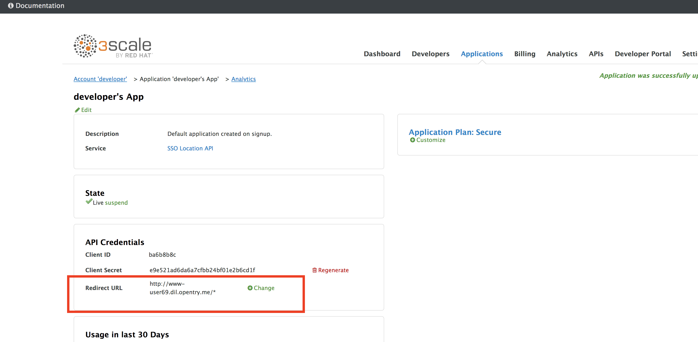
Step 3: Login to Developer Portal
As your portal is not currently public, you will need your portal code to login. You can get the code in your admin portal navigating to: Settings > Developer Portal > Domains & Access.
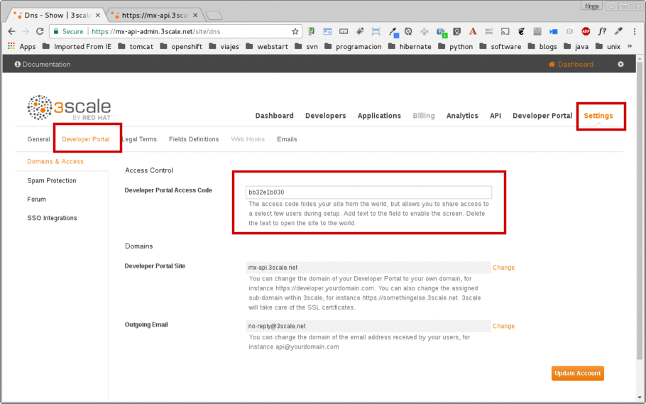Open a new Incognito/Private browser window to test the Developer Portal login. Navigate to the following. Make sure your user and Openshift environment is correct.
http://[userX].apps.[OCP_URL]Type your portal code to finish the login.

Sign in to the portal with your developer account you created previously.
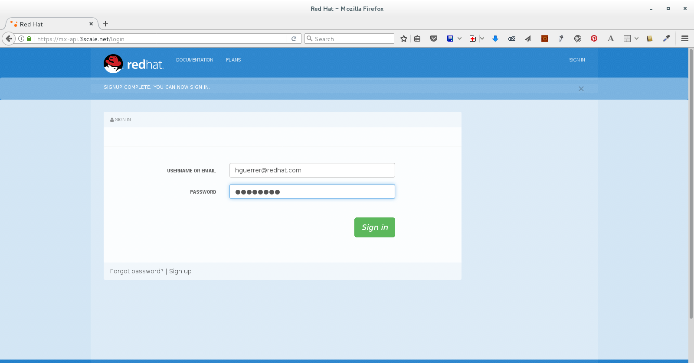You will land in the developers homepage, where you will be able to check your developers settings and retrieve your newly created Client ID and Client Secret for the Workshop App you created.
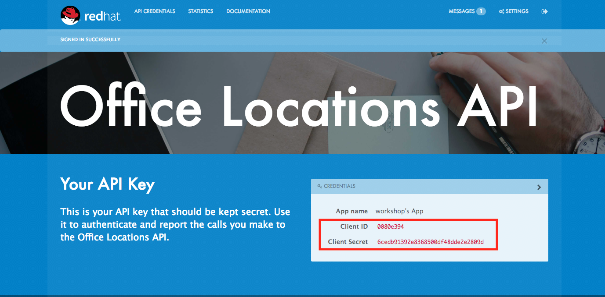
Copy down this credentials as it you will use them to authenticate yourself to the managed API in the next lab.
Congratulations! You have successfully customized your Developer Portal and completed a Sign Up process.
Steps Beyond
So, you want more? Click the Documentation link. Where does it takes you? API Docs is where you can add your interactive documentation for your APIs. Is based on the known Swagger UI interface.
You can add from the Admin Portal under API Docs the API definition to generate the live testing.
Summary
In this lab you discovered how to add a developer facing experience to your APIs. Developers in your organization or outside of it can now register, gain access to API keys and develop sample applications.
Notes and Further Reading
Red Hat 3scale Developer Portal's CMS consists of a few elements:
- Horizontal menu in the Admin Portal with access to content, redirects, and changes
- The main area containing details of the sections above
- CMS mode, accessible through the preview option

Liquid is a simple programming language used for displaying and processing most of the data from the 3scale system available for API providers. In 3scale, it is used to expose server-side data to your API developers, greatly extending the usefulness of the CMS while maintaining a high level of security.